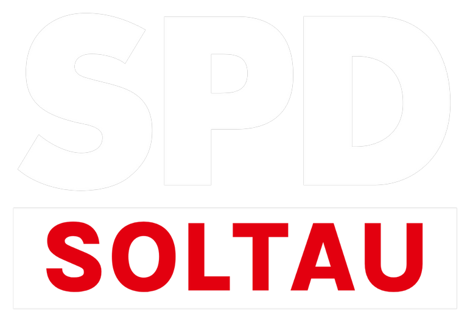

<!doctype html>
<html lang="de">
<head>
<meta charset="utf-8">
<title>Insta-Bühne</title>
<style>
/* Bühne 1080×1920 (Reels/Stories). Alle Bewegungen sind reine CSS-Animationen mit festen Zeiten – render.mjs pausiert sie und
   springt Bild für Bild (document.getAnimations → currentTime), dadurch ist jedes Bild exakt und unabhängig vom Rechner. */
@font-face{font-family:'TheSans SPD';font-weight:400;src:url('../fonts/thesans-regular.ttf')}
@font-face{font-family:'TheSans SPD';font-weight:700;src:url('../fonts/thesans-bold.ttf')}
@font-face{font-family:'TheSans SPD Versal';font-weight:800;src:url('../fonts/thesans-versal-extrabold.ttf')}
:root{--rot:#E3000F;--schwarz:#0F0F0F;--weiss:#fff;--display:'TheSans SPD Versal','TheSans SPD',Arial,sans-serif;--body:'TheSans SPD',Arial,sans-serif;--spring:cubic-bezier(.2,.9,.25,1.25);--ease:cubic-bezier(.2,.7,.2,1)}
*{box-sizing:border-box}
html,body{margin:0;width:1080px;height:1920px;overflow:hidden}
body{background:transparent;font-family:var(--body);color:#fff;position:relative}
body.gruen{background:#00B140}
body.rot{background:var(--rot)}
.sr{position:absolute;left:-9999px}

/* ---------- Intro: MOIN, SOLTAU! ---------- */
.intro{position:absolute;inset:0;display:grid;place-items:center;text-align:center;animation:introOut .6s var(--ease) 3.4s both}
.intro .eyebrow{font:700 34px/1 var(--body);letter-spacing:.34em;text-transform:uppercase;margin-bottom:26px;animation:fadeDown .7s var(--ease) 1.1s both}
.intro h1{margin:0;font:800 250px/.86 var(--display);text-transform:uppercase;letter-spacing:-.01em}
.intro h1 .ln{display:block;overflow:hidden;padding:.06em 0}
.intro h1 i{display:inline-block;font-style:normal;animation:moinIn 1s var(--spring) both;transform-origin:50% 100%}
.intro h1 i.rot{color:var(--rot)}
.intro .tag{display:inline-block;margin-top:40px;background:var(--rot);color:#fff;font:800 30px/1 var(--display);letter-spacing:.2em;text-transform:uppercase;padding:20px 28px 17px;animation:popIn .6s var(--spring) 1.5s both}
@keyframes moinIn{0%{transform:translateY(115%) rotate(8deg);opacity:0}55%{opacity:1}100%{transform:none;opacity:1}}
@keyframes bang{0%,100%{transform:none}30%{transform:translateY(-14%) rotate(-8deg) scale(1.12)}60%{transform:translateY(3%) rotate(5deg) scale(.96)}80%{transform:translateY(-4%) rotate(-2deg)}}
@keyframes fadeDown{from{opacity:0;transform:translateY(-24px)}to{opacity:1;transform:none}}
@keyframes popIn{from{opacity:0;transform:scale(.6)}to{opacity:1;transform:none}}
@keyframes introOut{to{opacity:0;transform:scale(1.08);filter:blur(14px)}}
.intro h1 i.bang{animation:moinIn 1s var(--spring) .8s both,bang .9s ease-in-out 1.9s}

/* ---------- Outro / Schlusskarte ---------- */
.outro{position:absolute;inset:0;display:grid;place-items:center;text-align:center}
.outro .box{display:grid;justify-items:center;gap:26px;animation:popIn .8s var(--spring) .1s both}
.outro img{width:420px;height:auto;animation:fadeDown .8s var(--ease) .2s both}
.outro .claim{font:800 96px/1 var(--display);text-transform:uppercase;letter-spacing:-.01em;animation:fadeDown .8s var(--ease) .6s both}
.outro .claim b{color:var(--rot)}
body.rot .outro .claim b{color:var(--schwarz)}
.outro .url{font:800 70px/1 var(--display);letter-spacing:.02em;background:#fff;color:var(--rot);padding:22px 34px 18px;animation:popIn .7s var(--spring) 1s both}
.outro .insta{display:flex;align-items:center;gap:16px;font:700 38px/1 var(--body);letter-spacing:.08em;animation:fadeDown .8s var(--ease) 1.4s both}
.outro .insta svg{width:44px;height:44px;fill:none;stroke:currentColor;stroke-width:2.2;stroke-linecap:round;stroke-linejoin:round}
.outro .cta{font:700 34px/1.3 var(--body);opacity:.9;animation:fadeDown .8s var(--ease) 1.8s both;max-width:760px}
.outro .strich{width:0;height:10px;background:var(--rot);animation:strich .9s var(--ease) 1.2s both}
body.rot .outro .strich{background:#fff}
@keyframes strich{to{width:360px}}

/* ---------- Bauchbinde (unten links) ---------- */
.binde{position:absolute;left:0;bottom:440px;display:grid;justify-items:start}
.binde .name{position:relative;overflow:hidden;background:var(--rot);color:#fff;font:800 78px/1 var(--display);text-transform:uppercase;letter-spacing:-.005em;padding:26px 44px 20px 60px;animation:bindeIn .7s var(--spring) .2s both,bindeOut .5s var(--ease) 5.3s both}
.binde .rolle{background:var(--schwarz);color:#fff;font:700 38px/1 var(--body);letter-spacing:.14em;text-transform:uppercase;padding:20px 40px 18px 60px;animation:bindeIn .7s var(--spring) .38s both,bindeOut .5s var(--ease) 5.2s both}
.binde .kante{width:14px;height:100%;position:absolute;left:0;top:0;background:#fff;animation:kante .5s var(--ease) .5s both}
@keyframes bindeIn{from{transform:translateX(-110%)}to{transform:none}}
@keyframes bindeOut{to{transform:translateX(-110%)}}
@keyframes kante{from{transform:scaleY(0)}to{transform:none}}

/* ---------- Wort-Popper (neben der Person) ---------- */
.wort{position:absolute;top:0;bottom:0;width:640px;display:grid;align-content:center;gap:10px;padding:0 40px}
.wort.links{left:0;justify-items:start;text-align:left}
.wort.rechts{right:100px;justify-items:end;text-align:right}
.wort .z{display:inline-block;font:800 140px/.92 var(--display);text-transform:uppercase;letter-spacing:-.015em;color:#fff;animation:wortIn .6s var(--spring) both,wortOut .45s var(--ease) 2.55s both}
.wort .z.rot{color:var(--rot);text-shadow:none}
.wort .z.box{background:var(--rot);color:#fff;padding:14px 26px 6px;text-shadow:none}
.wort .z.klein{font-size:64px;letter-spacing:.08em;font-family:var(--body);font-weight:700;color:#fff}
.wort .z.mittel{font-size:96px}
.wort .unter{height:14px;background:var(--rot);width:0;animation:unter .5s var(--ease) .45s both,wortOut .45s var(--ease) 2.55s both}
.wort.rechts .unter{justify-self:end}
.wort .z.box+.unter{display:none}
@keyframes wortIn{from{opacity:0;transform:translateY(60px) scale(.9)}to{opacity:1;transform:none}}
@keyframes wortOut{to{opacity:0;transform:translateY(-40px) scale(.96);filter:blur(8px)}}
@keyframes unter{to{width:260px}}
/* ---------- Skript-Clips: Frage/Versus, Zitat, Liste, Stempel, Durchstreichen, Illustrationen, Aufruf ---------- */
.mitte{position:absolute;inset:0;display:grid;align-content:center;justify-items:center;text-align:center;padding:0 70px;gap:22px}
.mitte.oben{align-content:start;padding-top:230px}
.mitte.unten{align-content:end;padding-bottom:430px}
.ey{font:700 30px/1 var(--body);letter-spacing:.3em;text-transform:uppercase;color:#fff;background:var(--rot);padding:16px 22px 13px;animation:popIn .5s var(--spring) both}
.gross{font:800 108px/.95 var(--display);text-transform:uppercase;color:#fff;letter-spacing:-.01em;text-wrap:balance;animation:wortIn .6s var(--spring) both .15s}
.gross b{color:var(--rot)}
.gross.xl{font-size:150px}
.gross.m{font-size:84px}
.mitte.oben{padding-top:190px}
.mitte.unten{padding-bottom:400px}
.raus{animation:wortOut .45s var(--ease) both var(--raus)}
/* Frage: zwei Antworten gegeneinander */
.vs{display:grid;gap:22px;width:100%;margin-top:30px}
.vs .karte{background:#fff;color:var(--schwarz);padding:38px 34px;font:800 62px/1.02 var(--display);text-transform:uppercase;text-align:left;border-left:16px solid var(--rot);animation:vsIn .6s var(--spring) both}
.vs .karte small{display:block;font:700 26px/1 var(--body);letter-spacing:.2em;color:var(--rot);margin-bottom:12px;text-transform:uppercase}
.vs .oder{justify-self:center;font:800 40px/1 var(--display);color:#fff;background:var(--schwarz);padding:14px 26px 11px;animation:popIn .4s var(--spring) both}
@keyframes vsIn{from{opacity:0;transform:translateX(-80px)}to{opacity:1;transform:none}}
/* Zitat */
.zitat{position:absolute;inset:0;display:grid;align-content:center;padding:0 80px;gap:26px}
.zitat .anf{font:800 260px/.6 var(--display);color:var(--rot);height:120px;animation:popIn .5s var(--spring) both}
.zitat p{margin:0;font:800 var(--zs,84px)/1.08 var(--display);text-transform:uppercase;color:#fff;background:rgba(15,15,15,.72);padding:34px 40px;box-decoration-break:clone;animation:wortIn .6s var(--spring) both .2s}
.zitat p b{color:var(--rot)}
.zitat .wer{font:700 32px/1 var(--body);letter-spacing:.18em;text-transform:uppercase;color:#fff;animation:fadeDown .5s var(--ease) both .8s}
/* Liste: Punkte erscheinen nacheinander */
.liste{position:absolute;inset:0;display:grid;align-content:center;padding:0 70px;gap:18px}
.liste .titel{font:800 54px/1 var(--display);text-transform:uppercase;color:#fff;background:var(--rot);padding:20px 24px 16px;justify-self:start;margin-bottom:10px;animation:popIn .5s var(--spring) both}
.liste .p{display:grid;grid-template-columns:auto minmax(0,1fr);gap:22px;align-items:center;background:#fff;color:var(--schwarz);padding:24px 30px;font:800 58px/1 var(--display);text-transform:uppercase;animation:vsIn .55s var(--spring) both}
.liste .p i{display:grid;place-items:center;width:64px;height:64px;background:var(--rot);color:#fff;font:800 34px/1 var(--display);font-style:normal}
.liste .p.frage i{background:var(--schwarz)}
/* Stempel */
.stempel{position:absolute;inset:0;display:grid;place-items:center}
.stempel span{display:block;padding:26px 40px;border:14px solid var(--rot);color:var(--rot);font:800 110px/1 var(--display);text-transform:uppercase;letter-spacing:.04em;transform:rotate(-8deg);background:rgba(255,255,255,.92);animation:stempelRein .5s cubic-bezier(.2,1.4,.4,1) both .2s;text-align:center;max-width:900px}
.stempel span.schwarz{border-color:var(--schwarz);color:var(--schwarz)}
.stempel span.klein{font-size:76px}
@keyframes stempelRein{from{opacity:0;transform:rotate(-8deg) scale(2.4)}to{opacity:1;transform:rotate(-8deg) scale(1)}}
/* Durchstreichen: Zeilen erscheinen, werden gestrichen, letzte bleibt */
.gegen{position:absolute;inset:0;display:grid;align-content:center;padding:0 70px;gap:16px}
.gegen .z{position:relative;justify-self:start;font:800 72px/1 var(--display);text-transform:uppercase;color:#fff;background:rgba(15,15,15,.75);padding:20px 28px 16px;animation:vsIn .5s var(--spring) both}
.gegen .z::after{content:"";position:absolute;left:20px;right:20px;top:50%;height:12px;background:var(--rot);transform:scaleX(0);transform-origin:left;animation:streich .35s var(--ease) both var(--d,1s)}
.gegen .z.bleibt{background:var(--rot);color:#fff;font-size:86px;margin-top:20px;padding:26px 32px 22px}
.gegen .z.bleibt::after{display:none}
@keyframes streich{to{transform:scaleX(1)}}
/* Illustration: Parteibuch und Akte */
.buchszene{position:absolute;inset:0;display:grid;align-content:center;justify-items:center;gap:40px;padding-bottom:520px}
.buch{width:300px;height:400px;background:var(--rot);border-radius:8px 22px 22px 8px;box-shadow:inset 30px 0 0 rgba(0,0,0,.18),0 30px 60px rgba(0,0,0,.4);display:grid;place-items:center;color:#fff;font:800 44px/1.1 var(--display);text-transform:uppercase;text-align:center;padding:30px;animation:buchWeg 1s var(--ease) both var(--buchweg,2.2s)}
.buch small{display:block;font:700 22px/1 var(--body);letter-spacing:.2em;margin-top:14px;opacity:.85}
@keyframes buchWeg{to{transform:translateX(-560px) rotate(-18deg) scale(.7);opacity:.35}}
.akte{width:520px;height:380px;background:#EAD9A6;border-radius:12px;position:relative;box-shadow:0 30px 60px rgba(0,0,0,.4);display:grid;align-content:end;padding:30px;color:#3a2f10;font:800 52px/1 var(--display);text-transform:uppercase;animation:akteVor 1s var(--spring) both var(--aktevor,2.3s)}
.akte::before{content:"";position:absolute;left:0;top:-38px;width:220px;height:50px;background:#EAD9A6;border-radius:12px 12px 0 0}
.akte small{display:block;font:700 22px/1 var(--body);letter-spacing:.2em;margin-top:12px;color:#7a6a3a}
@keyframes akteVor{from{transform:translateY(700px) scale(.8);opacity:0}to{transform:translateY(-120px) scale(1.15);opacity:1}}
.szene-text{position:absolute;left:70px;right:70px;bottom:330px;text-align:center;font:800 68px/1.05 var(--display);text-transform:uppercase;color:#fff;background:rgba(15,15,15,.75);padding:26px;animation:wortIn .6s var(--spring) both var(--textab,3.2s)}
.szene-text b{color:var(--rot)}
/* Wahlzettel */
.zettel{position:absolute;inset:0;display:grid;align-content:center;justify-items:center;gap:36px}
.zettel .papier{width:860px;background:#fff;color:var(--schwarz);padding:48px 54px;box-shadow:0 30px 60px rgba(0,0,0,.4);display:grid;gap:26px;animation:wortIn .6s var(--spring) both}
.zettel .kopf{font:700 26px/1 var(--body);letter-spacing:.24em;text-transform:uppercase;color:#777;border-bottom:3px solid #ddd;padding-bottom:16px}
.zettel .zeile{display:grid;grid-template-columns:auto minmax(0,1fr);gap:26px;align-items:center;font:800 62px/1 var(--display);text-transform:uppercase}
.zettel .box{width:70px;height:70px;border:6px solid var(--schwarz);position:relative}
.zettel .box::after{content:"";position:absolute;inset:8px;background:var(--rot);transform:scale(0);animation:popIn .3s var(--spring) both 1.4s}
.zettel .zeile.hand{font-family:'Segoe Script','Comic Sans MS',cursive;font-weight:400;font-size:48px;text-transform:none;color:#1a3a8a;overflow:hidden;white-space:nowrap;width:0;animation:tippen 1.2s steps(10) both .5s}
@keyframes tippen{to{width:100%}}
.zettel .zeile.hand{display:block;width:0}
/* Aufruf Stichwahl */
.aufruf{position:absolute;inset:0;display:grid;align-content:center;justify-items:center;gap:26px;text-align:center;padding:0 70px}
.aufruf .datum{font:800 130px/1 var(--display);color:#fff;animation:popIn .5s var(--spring) both .1s}
.aufruf .datum b{color:var(--rot)}
.aufruf .name{font:800 96px/1 var(--display);text-transform:uppercase;color:#fff;background:var(--rot);padding:22px 34px 18px;animation:wortIn .6s var(--spring) both .5s}
.aufruf .sub{font:700 40px/1.2 var(--body);letter-spacing:.14em;text-transform:uppercase;color:#fff;animation:fadeDown .6s var(--ease) both 1s}
.aufruf .foto{width:520px;height:520px;border-radius:50%;object-fit:cover;object-position:top;border:14px solid #fff;box-shadow:0 30px 70px rgba(0,0,0,.45);animation:popIn .7s var(--spring) both}

/* ---------- Handy-Rahmen (Bildschirm bleibt frei/grün – Bildschirmaufnahme liegt in CapCut darunter) ---------- */
.handy{position:absolute;left:var(--hx,60px);top:var(--hy,440px);width:var(--hw,470px);height:calc(var(--hw,470px) * 2.09);background:transparent;border-radius:calc(var(--hw,470px) * .13);box-shadow:inset 0 0 0 3px #3a3a3a,inset 0 0 0 16px #151515,inset 0 0 0 18px #000,0 40px 80px rgba(0,0,0,.45);animation:handyRein .7s var(--spring) both}
.handy::before{display:none}
.handy .screen{position:absolute;inset:16px;border-radius:calc(var(--hw,470px) * .105);background:var(--screen,transparent)}
.handy .cam{position:absolute;left:50%;top:30px;width:22px;height:22px;border-radius:50%;background:#000;transform:translateX(-50%);box-shadow:inset 0 0 0 3px #222}
.handy .btn{position:absolute;right:-6px;width:6px;background:#2a2a2a;border-radius:0 4px 4px 0}
.handy .btn.b1{top:22%;height:110px}.handy .btn.b2{top:34%;height:70px}
.handy .btnl{position:absolute;left:-6px;top:26%;width:6px;height:60px;background:#2a2a2a;border-radius:4px 0 0 4px}
.handy .label{position:absolute;left:0;right:0;bottom:-70px;text-align:center;font:800 26px/1 var(--display);letter-spacing:.18em;text-transform:uppercase;color:#fff;animation:fadeDown .5s var(--ease) both .6s}
@keyframes handyRein{from{opacity:0;transform:translateX(-120px) rotate(-6deg)}to{opacity:1;transform:none}}
body.gruen .handy .screen{background:#00B140}

/* ---------- Foto-Karte: Polaroid neben der Person, schwebt leicht ---------- */
.foto-pos{position:absolute;top:230px;width:470px;--rot:-6deg;animation:fotoPop .8s var(--spring) both}
.foto-pos.links{left:50px}.foto-pos.rechts{right:50px;--rot:6deg}
.foto-pos.f-mitte{top:600px}.foto-pos.f-gross{width:620px}
.foto{margin:0;display:grid;gap:16px;padding:22px 22px 26px;background:#fff;box-shadow:0 30px 70px rgba(0,0,0,.45);animation:schweben 3.2s ease-in-out .8s infinite alternate}
.foto img,.foto .platz{display:block;width:100%;aspect-ratio:1/1.05;object-fit:cover;background:#ddd}
.foto .platz{display:grid;place-items:center;font:800 40px/1 var(--display);color:#999;text-transform:uppercase;letter-spacing:.1em}
.foto figcaption{font:700 30px/1.2 var(--body);color:#222;text-align:center}
@keyframes fotoPop{from{opacity:0;transform:translateY(80px) rotate(calc(var(--rot) - 8deg)) scale(.85)}to{opacity:1;transform:rotate(var(--rot))}}
@keyframes fotoWisch{from{opacity:0;transform:translateX(-160px) rotate(calc(var(--rot) - 10deg))}to{opacity:1;transform:rotate(var(--rot))}}
[data-anim=wisch] .foto-pos.rechts{animation-name:fotoWischR}
@keyframes fotoWischR{from{opacity:0;transform:translateX(160px) rotate(calc(var(--rot) + 10deg))}to{opacity:1;transform:rotate(var(--rot))}}
@keyframes fotoWeich{from{opacity:0;filter:blur(16px);transform:rotate(var(--rot)) scale(1.06)}to{opacity:1;filter:blur(0);transform:rotate(var(--rot))}}
@keyframes fotoFall{0%{opacity:0;transform:translateY(-300px) rotate(calc(var(--rot) - 6deg))}60%{opacity:1;transform:translateY(16px) rotate(var(--rot))}82%{transform:translateY(-6px) rotate(var(--rot))}100%{opacity:1;transform:rotate(var(--rot))}}
@keyframes schweben{from{transform:translateY(0)}to{transform:translateY(-12px)}}
[data-anim=wisch] .foto-pos{animation-name:fotoWisch;animation-timing-function:var(--ease)}
[data-anim=weich] .foto-pos{animation-name:fotoWeich;animation-timing-function:var(--ease);animation-duration:.9s}
[data-anim=fall] .foto-pos{animation-name:fotoFall;animation-timing-function:ease-out;animation-duration:.8s}

/* ---------- Riesentitel: ein Wort, bildschirmfüllend – in CapCut hinter die Person legen ---------- */
.riesen{position:absolute;inset:0;display:grid;align-content:center;justify-items:center;text-align:center;padding:0 30px}
.riesen.oben{align-content:start;padding-top:150px}.riesen.unten{align-content:end;padding-bottom:320px}
.riesen .drift{animation:drift 8s linear both}
.riesen .t{display:block;white-space:nowrap;font:800 340px/.86 var(--display);text-transform:uppercase;letter-spacing:-.02em;color:#fff;animation:weichIn .9s var(--ease) both}
.riesen .t.schwarz{color:var(--schwarz)}.riesen .t.rot{color:var(--rot)}
@keyframes drift{from{transform:scale(1.1)}to{transform:scale(1)}}

/* ---------- Datenschild: Karte mit Linie und Punkt – den Punkt in CapCut per Tracking ans Objekt heften ---------- */
.schild{position:absolute;inset:0}
.schild svg{position:absolute;inset:0;width:1080px;height:1920px;overflow:visible}
.schild line{stroke:#fff;stroke-width:6;stroke-linecap:round;stroke-dasharray:var(--l,600);stroke-dashoffset:var(--l,600);animation:zeichnen .4s var(--ease) both .2s}
.schild .karte{position:absolute;left:330px;top:760px;width:520px;background:#fff;color:var(--schwarz);padding:24px 30px 22px;box-shadow:0 26px 60px rgba(0,0,0,.4);display:grid;gap:8px;border-left:14px solid var(--rot);animation:wischIn .5s var(--ease) both .5s}
.schild.rechts .karte{left:230px}
.schild .karte b{font:800 44px/1 var(--display);text-transform:uppercase;margin-bottom:6px}
.schild .karte span{font:700 30px/1.25 var(--body);animation:fadeDown .4s var(--ease) both}
.schild .punkt{position:absolute;width:26px;height:26px;margin:-13px 0 0 -13px;border-radius:50%;background:var(--rot);border:6px solid #fff;box-shadow:0 0 0 8px rgba(227,0,15,.35);animation:popIn .3s var(--spring) both}
@keyframes zeichnen{to{stroke-dashoffset:0}}

/* ---------- Liste „Fokus“: aktueller Punkt im Rahmen, die nächsten unscharf, erledigte blass ---------- */
.liste.fokus{gap:26px;padding:0 90px}
.liste.fokus .p{position:relative;display:block;background:none;color:#fff;font:700 56px/1.15 var(--body);text-transform:none;text-shadow:0 4px 22px rgba(0,0,0,.6);padding:22px 30px;filter:blur(9px);opacity:.4;animation:fokusRein .35s var(--ease) both,fokusRaus .35s var(--ease) both}
.liste.fokus .p i{display:inline;width:auto;height:auto;background:none;color:#fff;font:inherit;margin-right:.3em}
.liste.fokus .p .rahmen{position:absolute;inset:0;border:6px solid #fff;border-radius:18px;opacity:0;animation:rahmenRein .3s var(--ease) both,rahmenRaus .25s var(--ease) both}
.liste.fokus .p.letzte{animation-name:fokusRein}
.liste.fokus .p.letzte .rahmen{animation-name:rahmenRein}
@keyframes fokusRein{to{filter:blur(0);opacity:1}}
@keyframes fokusRaus{to{opacity:.55}}
@keyframes rahmenRein{to{opacity:1}}
@keyframes rahmenRaus{to{opacity:0}}

/* ---------- Animationsarten (?anim=pop|wisch|weich|fall|tipp): gleiche Zeiten, anderer Weg ins Bild ----------
   pop = Standard (springt rein) · wisch = wischt von der Seite rein · weich = blendet weich ein · fall = fällt von oben mit Nachwippen · tipp = Buchstabe für Buchstabe */
@keyframes wischIn{from{clip-path:inset(0 100% 0 0);transform:translateX(-40px)}to{clip-path:inset(0 0 0 0);transform:none}}
@keyframes wischInR{from{clip-path:inset(0 0 0 100%);transform:translateX(40px)}to{clip-path:inset(0 0 0 0);transform:none}}
@keyframes weichIn{from{opacity:0;filter:blur(14px);transform:scale(1.05)}to{opacity:1;filter:blur(0);transform:none}}
@keyframes fallIn{0%{opacity:0;transform:translateY(-140px)}60%{opacity:1;transform:translateY(14px)}82%{transform:translateY(-6px)}100%{opacity:1;transform:none}}
@keyframes stempelWisch{from{clip-path:inset(0 100% 0 0);transform:rotate(-8deg)}to{clip-path:inset(0 0 0 0);transform:rotate(-8deg)}}
@keyframes stempelWeich{from{opacity:0;transform:rotate(-8deg) scale(1.15);filter:blur(10px)}to{opacity:1;transform:rotate(-8deg) scale(1);filter:blur(0)}}
@keyframes stempelFall{0%{opacity:0;transform:rotate(-8deg) translateY(-220px)}60%{opacity:1;transform:rotate(-8deg) translateY(18px)}100%{opacity:1;transform:rotate(-8deg)}}
@keyframes tippIn{from{opacity:0}to{opacity:1}}
@keyframes tpc{0%{opacity:1}100%{opacity:0}}
/* Elemente mit einer Einblend-Animation */
[data-anim=wisch] :is(.ey,.gross,.liste .titel,.liste:not(.fokus) .p,.zitat .anf,.zitat p,.zitat .wer,.aufruf .datum,.aufruf .name,.aufruf .sub,.aufruf .foto,.intro .eyebrow,.intro .tag,.outro .box,.outro img,.outro .claim,.outro .url,.outro .insta,.outro .cta,.vs .karte,.vs .oder,.szene-text,.gegen .z,.riesen .t,.schild .karte){animation-name:wischIn;animation-timing-function:var(--ease)}
[data-anim=weich] :is(.ey,.gross,.liste .titel,.liste:not(.fokus) .p,.zitat .anf,.zitat p,.zitat .wer,.aufruf .datum,.aufruf .name,.aufruf .sub,.aufruf .foto,.intro .eyebrow,.intro .tag,.outro .box,.outro img,.outro .claim,.outro .url,.outro .insta,.outro .cta,.vs .karte,.vs .oder,.szene-text,.gegen .z,.intro h1 i,.riesen .t,.schild .karte){animation-name:weichIn;animation-timing-function:var(--ease);animation-duration:.8s}
[data-anim=fall] :is(.ey,.gross,.liste .titel,.liste:not(.fokus) .p,.zitat .anf,.zitat p,.zitat .wer,.aufruf .datum,.aufruf .name,.aufruf .sub,.aufruf .foto,.intro .eyebrow,.intro .tag,.outro .box,.outro img,.outro .claim,.outro .url,.outro .insta,.outro .cta,.vs .karte,.vs .oder,.szene-text,.gegen .z,.intro h1 i,.riesen .t,.schild .karte){animation-name:fallIn;animation-timing-function:ease-out;animation-duration:.7s}
/* Elemente mit Ein- und Ausblendung */
[data-anim=wisch] .wort .z{animation-name:wischIn,wortOut;animation-timing-function:var(--ease),var(--ease)}
[data-anim=wisch] .wort.rechts .z{animation-name:wischInR,wortOut}
[data-anim=weich] .wort .z{animation-name:weichIn,wortOut;animation-timing-function:var(--ease),var(--ease);animation-duration:.8s,.45s}
[data-anim=fall] .wort .z{animation-name:fallIn,wortOut;animation-timing-function:ease-out,var(--ease);animation-duration:.7s,.45s}
[data-anim=weich] .binde .name,[data-anim=weich] .binde .rolle{animation-name:weichIn,bindeOut;animation-duration:.8s,.5s}
[data-anim=fall] .binde .name,[data-anim=fall] .binde .rolle{animation-name:fallIn,bindeOut;animation-timing-function:ease-out,var(--ease);animation-duration:.7s,.5s}
[data-anim=weich] .intro h1 i.bang{animation-name:weichIn,bang}
[data-anim=fall] .intro h1 i.bang{animation-name:fallIn,bang}
[data-anim=wisch] .stempel span{animation-name:stempelWisch;animation-timing-function:var(--ease)}
[data-anim=weich] .stempel span{animation-name:stempelWeich;animation-timing-function:var(--ease);animation-duration:.8s}
[data-anim=fall] .stempel span{animation-name:stempelFall;animation-timing-function:ease-out;animation-duration:.7s}
/* Tippen: Buchstaben einzeln (JS wickelt sie ein), Cursor blinkt solange getippt wird */
.tp{opacity:0;animation:tippIn 1ms steps(1,end) both}
.tp-c{display:inline-block;width:.08em;height:.85em;background:currentColor;margin-left:.06em;vertical-align:-.06em;opacity:0;animation:tpc .5s steps(2,start) forwards}
[data-anim=tipp] .gross,[data-anim=tipp] .zitat p,[data-anim=tipp] .riesen .t,[data-anim=tipp] .aufruf .name,[data-anim=tipp] .ey,[data-anim=tipp] .liste .titel,[data-anim=tipp] .szene-text,[data-anim=tipp] .vs .karte,[data-anim=tipp] .outro .claim,[data-anim=tipp] .outro .cta,[data-anim=tipp] .intro .tag,[data-anim=tipp] .aufruf .sub,[data-anim=tipp] .zitat .wer,[data-anim=tipp] .gegen .z{animation-name:none}
[data-anim=tipp] .wort .z{animation-name:none,wortOut}
[data-anim=tipp] .binde .name,[data-anim=tipp] .binde .rolle{animation-name:bindeIn,bindeOut}

</style>
</head>
<body>
<script>
// Aufbau je nach Adresse: ?clip=intro|outro|binde|wort  &bg=gruen|rot|keins  &name=…&rolle=…  &text=Zeile|Zeile  &seite=links|rechts
const q = new URLSearchParams(location.search);
const clip = q.get('clip') || 'intro';
const bg = q.get('bg') || 'gruen';
if (bg !== 'keins') document.body.classList.add(bg);
const anim = ['wisch', 'weich', 'fall', 'tipp'].includes(q.get('anim')) ? q.get('anim') : 'pop';
document.body.dataset.anim = anim;
const esc = s => String(s).replace(/[&<>"]/g, c => ({ '&': '&amp;', '<': '&lt;', '>': '&gt;', '"': '&quot;' }[c]));
const letters = (word, delay0, step, rotIdx = []) => [...word].map((ch, i) => `<i class="${rotIdx.includes(i) ? 'rot' : ''}${i === word.length - 1 && /[!,]/.test(ch) && clip === 'intro' && word.endsWith('!') ? ' bang' : ''}" style="animation-delay:${(delay0 + i * step).toFixed(2)}s${i === word.length - 1 && word.endsWith('!') ? ',1.9s' : ''}">${esc(ch)}</i>`).join('');
let html = '';
if (clip === 'intro') {
  html = `<div class="intro"><div>
    <p class="eyebrow">Die neue spd-soltau.de</p>
    <h1 aria-label="Moin, Soltau!"><span class="ln">${letters('Moin,', .1, .07, [4])}</span><span class="ln">${letters('Soltau!', .5, .07, [6])}</span></h1>
    <span class="tag">${esc(q.get('text') || 'Aus Liebe zu Soltau')}</span>
  </div></div>`;
} else if (clip === 'outro') {
  html = `<div class="outro"><div class="box">
    
    <p class="claim">Aus Liebe<br>zu <b>Soltau</b></p>
    <span class="strich"></span>
    <span class="url">spd-soltau.de</span>
    <span class="insta"><svg viewBox="0 0 24 24" aria-hidden="true"><rect x="3" y="3" width="18" height="18" rx="5"/><circle cx="12" cy="12" r="4"/><circle cx="17.5" cy="6.5" r=".8" fill="currentColor"/></svg>@spd_soltau</span>
    ${q.get('text') ? `<p class="cta">${esc(q.get('text'))}</p>` : ''}
  </div></div>`;
} else if (clip === 'binde') {
  html = `<div class="binde"><span class="name">${esc(q.get('name') || 'Vorname Name')}<span class="kante"></span></span><span class="rolle">${esc(q.get('rolle') || 'SPD Soltau')}</span></div>`;
} else if (clip === 'wort') {
  const seite = q.get('seite') === 'rechts' ? 'rechts' : 'links';
  const zeilen = (q.get('text') || 'Neue|Website').split('|');
  html = `<div class="wort ${seite}">${zeilen.map((z, i) => { const m = z.match(/^([*#_-])?(.*)$/); const cls = { '*': 'rot', '#': 'box', '_': 'klein', '-': 'mittel' }[m[1]] || ''; return `<span class="z ${cls}" style="animation-delay:${(.1 + i * .16).toFixed(2)}s,2.55s">${esc(m[2])}</span>`; }).join('')}<span class="unter"></span></div>`;
} else if (clip === 'frage') {
  const [t1, t2] = (q.get('text') || 'Kein Parteibuch?|Der eigenen Partei widersprechen?').split('|');
  html = `<div class="mitte oben"><span class="ey">${esc(q.get('titel') || 'Was ist unabhängiger?')}</span>
    <div class="vs"><div class="karte" style="animation-delay:.6s"><small>A</small>${esc(t1)}</div><span class="oder" style="animation-delay:1.2s">oder</span><div class="karte" style="animation-delay:1.6s"><small>B</small>${esc(t2)}</div></div></div>`;
} else if (clip === 'zitat') {
  const text = (q.get('text') || 'Wir brauchen jemanden, der unabhängig ist.').replace(/\*(.+?)\*/g, '<b>$1</b>');
  const zs = q.get('gr') || (text.length > 90 ? '64px' : text.length > 50 ? '76px' : '90px');
  html = `<div class="zitat" style="--zs:${zs}"><span class="anf">„</span><p>${text}</p>${q.get('wer') ? `<span class="wer">${esc(q.get('wer'))}</span>` : ''}</div>`;
} else if (clip === 'liste') {
  const items = (q.get('text') || 'Plakate aufhängen|Anträge schreiben|Diskutieren|Verantwortung übernehmen').split('|');
  const frage = q.get('art') === 'fragen';
  if (q.get('art') === 'fokus') {
    // Fokus: alle Punkte stehen unscharf da, einer nach dem anderen wird scharf und bekommt den Rahmen; Zeit verteilt sich auf die Clip-Länge
    const dauer = parseFloat(q.get('dauer')) || 5; const schritt = Math.max(.8, (dauer - 1.2) / items.length);
    html = `<div class="liste fokus">${q.get('titel') ? `<span class="titel">${esc(q.get('titel'))}</span>` : ''}${items.map((t, i) => { const an = .4 + i * schritt, aus = an + schritt; const letzte = i === items.length - 1; return `<div class="p ${letzte ? 'letzte' : ''}" style="animation-delay:${an.toFixed(2)}s,${aus.toFixed(2)}s"><span class="rahmen" style="animation-delay:${an.toFixed(2)}s,${aus.toFixed(2)}s"></span><i>${i + 1}.</i>${esc(t)}</div>`; }).join('')}</div>`;
  } else
  html = `<div class="liste">${q.get('titel') ? `<span class="titel">${esc(q.get('titel'))}</span>` : ''}${items.map((t, i) => `<div class="p ${frage ? 'frage' : ''}" style="animation-delay:${(.5 + i * .75).toFixed(2)}s"><i>${frage ? '?' : i + 1}</i><span>${esc(t)}</span></div>`).join('')}</div>`;
} else if (clip === 'foto') {
  // Foto-Karte: url = Bild (aus dem Material der App), text = Unterschrift, seite links|rechts, pos oben|mitte, gr gross
  const seite = q.get('seite') === 'rechts' ? 'rechts' : 'links';
  html = `<div class="foto-pos ${seite} ${q.get('pos') === 'mitte' ? 'f-mitte' : ''} ${q.get('gr') === 'gross' ? 'f-gross' : ''}"><figure class="foto">${q.get('url') ? `` : '<div class="platz">Foto</div>'}${q.get('text') ? `<figcaption>${esc(q.get('text'))}</figcaption>` : ''}</figure></div>`;
} else if (clip === 'riesen') {
  const zeilen = (q.get('text') || 'Heute').split('|'); const farbe = { schwarz: 'schwarz', rot: 'rot' }[q.get('farbe')] || '';
  html = `<div class="riesen ${{ oben: 'oben', unten: 'unten' }[q.get('pos')] || ''}"><div class="drift"><span class="t ${farbe}">${zeilen.map(esc).join('<br>')}</span></div></div>`;
} else if (clip === 'schild') {
  const zeilen = (q.get('text') || '40 Wohnungen|Baubeginn 2027').split('|').filter(Boolean); const seite = ['rechts', 'oben'].includes(q.get('seite')) ? q.get('seite') : 'links';
  html = `<div class="schild ${seite}"><svg viewBox="0 0 1080 1920"><line x1="0" y1="0" x2="0" y2="0"/></svg><div class="karte">${q.get('titel') ? `<b>${esc(q.get('titel'))}</b>` : ''}${zeilen.map((z, i) => `<span style="animation-delay:${(.9 + i * .18).toFixed(2)}s">${esc(z)}</span>`).join('')}</div><span class="punkt"></span></div>`;
} else if (clip === 'stempel') {
  html = `<div class="stempel"><span class="${q.get('art') === 'schwarz' ? 'schwarz' : ''} ${(q.get('text') || '').length > 14 ? 'klein' : ''}">${esc(q.get('text') || 'Absurd')}</span></div>`;
} else if (clip === 'gegen') {
  const zeilen = (q.get('text') || 'Landrat der SPD|Landrat der CDU|Landrat der Parteilosen|Landrat für alle im Heidekreis').split('|');
  html = `<div class="gegen">${zeilen.map((z, i) => { const letzte = i === zeilen.length - 1; return `<span class="z ${letzte ? 'bleibt' : ''}" style="animation-delay:${(.3 + i * .9).toFixed(2)}s">${esc(z)}</span>`; }).join('')}</div>`;
} else if (clip === 'buch') {
  html = `<div class="buchszene"><div class="buch">Parteibuch<small>zur Seite</small></div><div class="akte">Akte<small>der Verwaltung nach vorne</small></div></div><p class="szene-text">Das Parteibuch <b>zur Seite</b>.<br>Die Akte <b>nach vorne</b>.</p>`;
} else if (clip === 'zettel') {
  html = `<div class="zettel"><div class="papier"><span class="kopf">Stimmzettel</span><div class="zeile"><span class="box"></span><span>parteilos</span></div><div class="zeile hand">kann man draufschreiben</div></div>
    <p class="szene-text" style="--textab:2.4s;bottom:360px">Unabhängigkeit muss man <b>beweisen</b>.</p></div>`;
} else if (clip === 'aufruf') {
  html = `<div class="aufruf">${q.get('foto') ? `` : ''}<span class="datum">${esc(q.get('datum') || '27.')} <b>${esc(q.get('monat') || 'September')}</b></span><span class="name">${esc(q.get('name') || 'Sebastian Zinke')}</span><span class="sub">${esc(q.get('text') || 'Stichwahl · Landrat für alle im Heidekreis')}</span></div>`;
} else if (clip === 'handy') {
  // Position/Größe per Adresse: &x=60&y=440&w=470 (Pixel im 1080×1920-Bild) &label=Text
  const st = [q.get('x') && `--hx:${q.get('x')}px`, q.get('y') && `--hy:${q.get('y')}px`, q.get('w') && `--hw:${q.get('w')}px`].filter(Boolean).join(';');
  html = `<div class="handy" style="${st}"><div class="screen"></div><span class="cam"></span><span class="btn b1"></span><span class="btn b2"></span><span class="btnl"></span>${q.get('label') ? `<span class="label">${esc(q.get('label'))}</span>` : ''}</div>`;
} else if (clip === 'gross') {
  const zeilen = (q.get('text') || 'So funktionieren|Parteien nicht.').split('|');
  const pos = { oben: 'oben', unten: 'unten' }[q.get('pos')] || '';
  html = `<div class="mitte ${pos}">${q.get('label') ? `<span class="ey">${esc(q.get('label'))}</span>` : ''}<p class="gross ${q.get('gr') === 'xl' ? 'xl' : q.get('gr') === 'm' ? 'm' : ''}">${zeilen.map(z => z.replace(/\*(.+?)\*/g, '<b>$1</b>')).join('<br>')}</p></div>`;
}
document.body.insertAdjacentHTML('beforeend', html);
// Riesentitel: Schrift so groß, wie es in die Breite passt
const rs = document.querySelector('.riesen .t');
if (rs) { let fs = 340; rs.style.fontSize = fs + 'px'; while (fs > 90 && (rs.scrollWidth > 1020 || rs.scrollHeight > 1500)) { fs -= 10; rs.style.fontSize = fs + 'px'; } }
// Datenschild: Linie von der Karte zum Punkt (der Punkt wird in CapCut ans Objekt geheftet)
const sch = document.querySelector('.schild');
if (sch) {
  const k = sch.querySelector('.karte').getBoundingClientRect(); const seite = sch.classList.contains('rechts') ? 'rechts' : sch.classList.contains('oben') ? 'oben' : 'links';
  const ecke = seite === 'links' ? [k.left, k.bottom] : seite === 'rechts' ? [k.right, k.bottom] : [k.left + k.width / 2, k.top];
  const punkt = seite === 'links' ? [150, k.bottom + 150] : seite === 'rechts' ? [930, k.bottom + 150] : [k.left + k.width / 2, k.top - 170];
  const l = sch.querySelector('line'); l.setAttribute('x1', ecke[0]); l.setAttribute('y1', ecke[1]); l.setAttribute('x2', punkt[0]); l.setAttribute('y2', punkt[1]);
  l.style.setProperty('--l', Math.hypot(punkt[0] - ecke[0], punkt[1] - ecke[1]).toFixed(0));
  const p = sch.querySelector('.punkt'); p.style.left = punkt[0] + 'px'; p.style.top = punkt[1] + 'px';
}
// Tippen: Text in einzelne Buchstaben zerlegen, jeder erscheint nach dem vorigen; Start = bisherige Verzögerung des Elements
if (anim === 'tipp') {
  const ziele = document.querySelectorAll('.gross, .wort .z, .zitat p, .liste:not(.fokus) .p span, .binde .name, .aufruf .name, .aufruf .sub, .ey, .liste .titel, .szene-text, .vs .karte, .outro .claim, .outro .cta, .intro .tag, .zitat .wer, .gegen .z, .riesen .t, .schild .karte b, .schild .karte span');
  ziele.forEach(el => {
    const wirt = el.closest('.liste .p') || el; // Verzögerung steht am Listenpunkt, getippt wird der Text darin
    const cs = getComputedStyle(wirt); const start = (parseFloat(cs.animationDelay) || 0) + (cs.animationName.split(',')[0].trim() !== 'none' ? .35 : 0); // erst reinkommen, dann tippen
    const zeichen = []; const sammeln = n => { if (n.nodeType === 3) zeichen.push(n); else if (!n.classList?.contains('kante')) [...n.childNodes].forEach(sammeln); }; sammeln(el);
    const n = zeichen.reduce((a, t) => a + t.data.replace(/\s/g, '').length, 0); const schritt = Math.min(.055, 1.2 / Math.max(n, 1)); let i = 0;
    zeichen.forEach(t => { const f = document.createDocumentFragment(); for (const ch of t.data) { if (/\s/.test(ch)) { f.append(ch); continue; } const s = document.createElement('data'); s.className = 'tp'; s.textContent = ch; s.style.animationDelay = (start + i * schritt).toFixed(3) + 's'; i++; f.append(s); } t.replaceWith(f); });
    const c = document.createElement('data'); c.className = 'tp-c'; c.style.animationDelay = start.toFixed(2) + 's'; c.style.animationIterationCount = String(Math.max(1, Math.ceil(i * schritt / .5))); el.append(c);
  });
}
if (clip === 'gegen') document.querySelectorAll('.gegen .z:not(.bleibt)').forEach((z, i) => { z.style.setProperty('--d', (1.0 + i * .9).toFixed(2) + 's'); });
// Bild-für-Bild-Steuerung für render.mjs
window.__anims = null;
window.seek = t => {
  if (!window.__anims) { window.__anims = document.getAnimations(); window.__anims.forEach(a => a.pause()); }
  window.__anims.forEach(a => { a.currentTime = t; });
};
</script>
</body>
</html>
